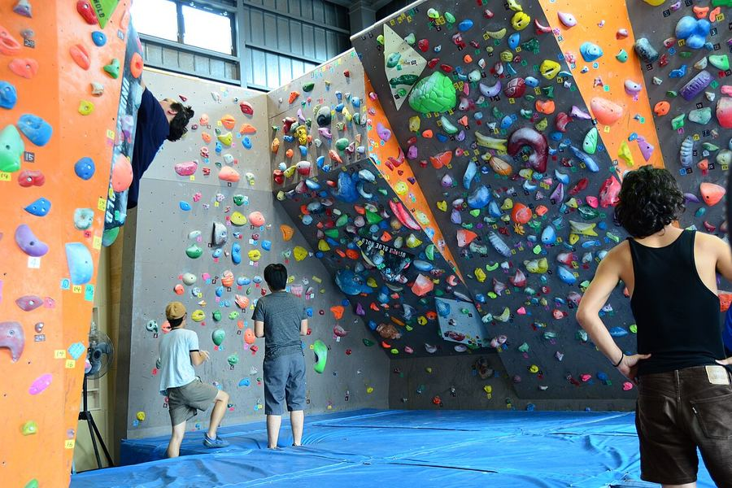
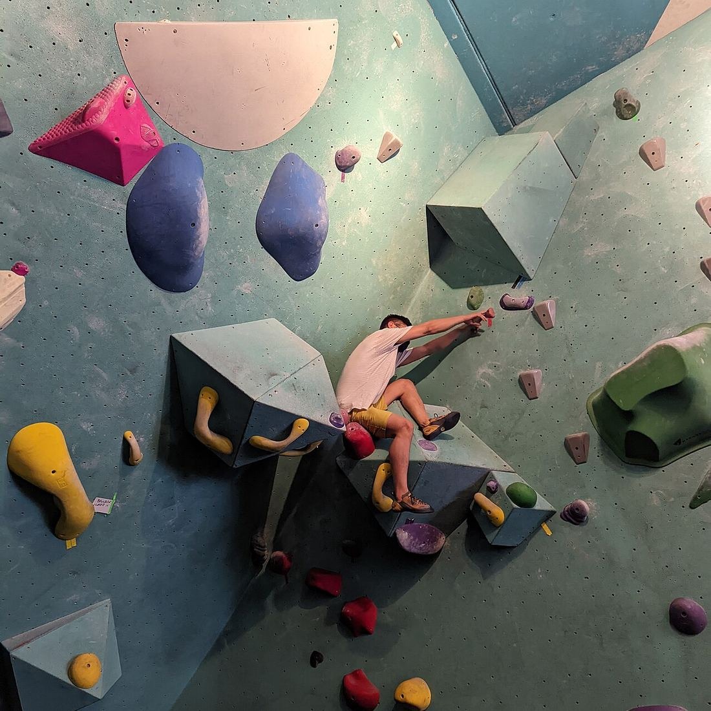
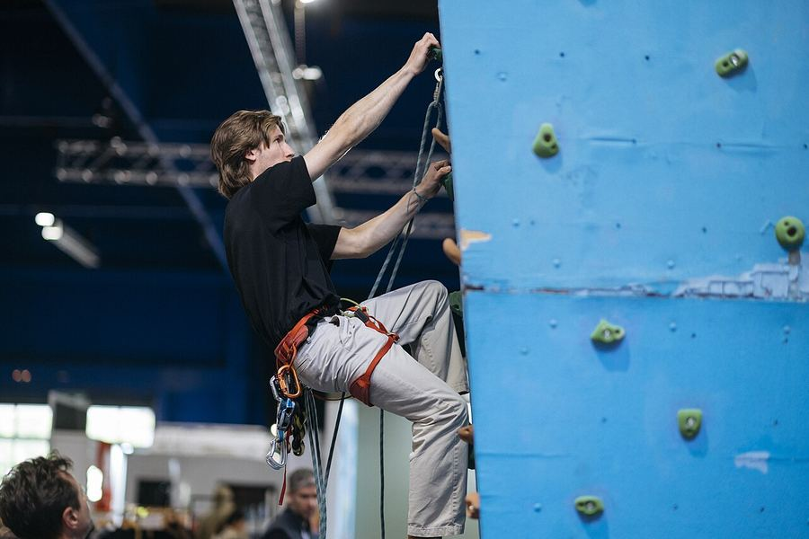
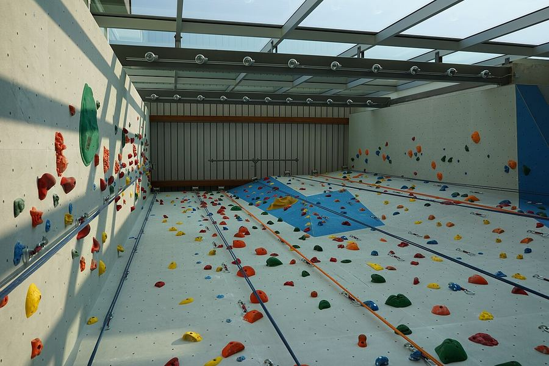
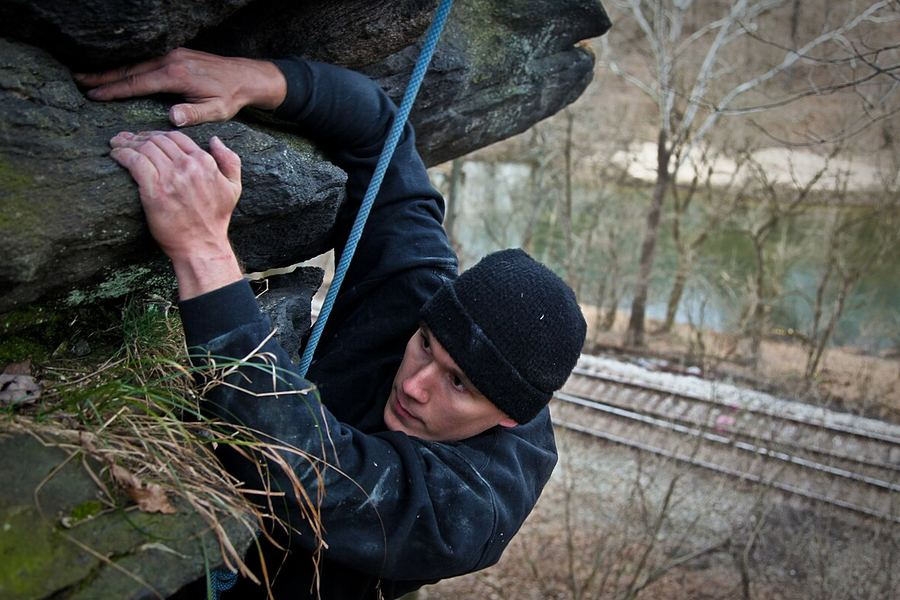

La séance découverte du samedi
Deux heures avec un encadrant, huit personnes au plus. Le matériel est prêté, il n'y a rien à acheter avant de venir.
10 €, payés sur placesamedi, 10 h – 12 h
Club associatif · Grenoble
Les Dalles, c'est une salle de bloc et de voie, 180 membres, et une séance découverte chaque samedi matin : 10 €, matériel prêté, un encadrant avec vous. Déjà membre ? Réserver un créneau
Venir essayer
Par où commencer

Deux heures avec un encadrant, huit personnes au plus. Le matériel est prêté, il n'y a rien à acheter avant de venir.

Bloc et voie, du lundi au samedi. La licence est comprise.

Les créneaux des sept prochains jours et les places qui restent. Deux touches, c'est réservé.

Le club
Les Dalles est un club associatif grenoblois. On y grimpe en bloc et en voie, dans la même salle, du lundi au samedi.
Vous n'avez jamais grimpé ? La séance découverte du samedi matin est faite pour ça. Si ça vous plaît, vous adhérez pour l'année, puis vous réservez vos créneaux depuis votre téléphone.
Tarifs
Horaires et accès
De 10 h à 12 h, 10 € sur place, matériel prêté. Huit places par séance : réservez la vôtre.